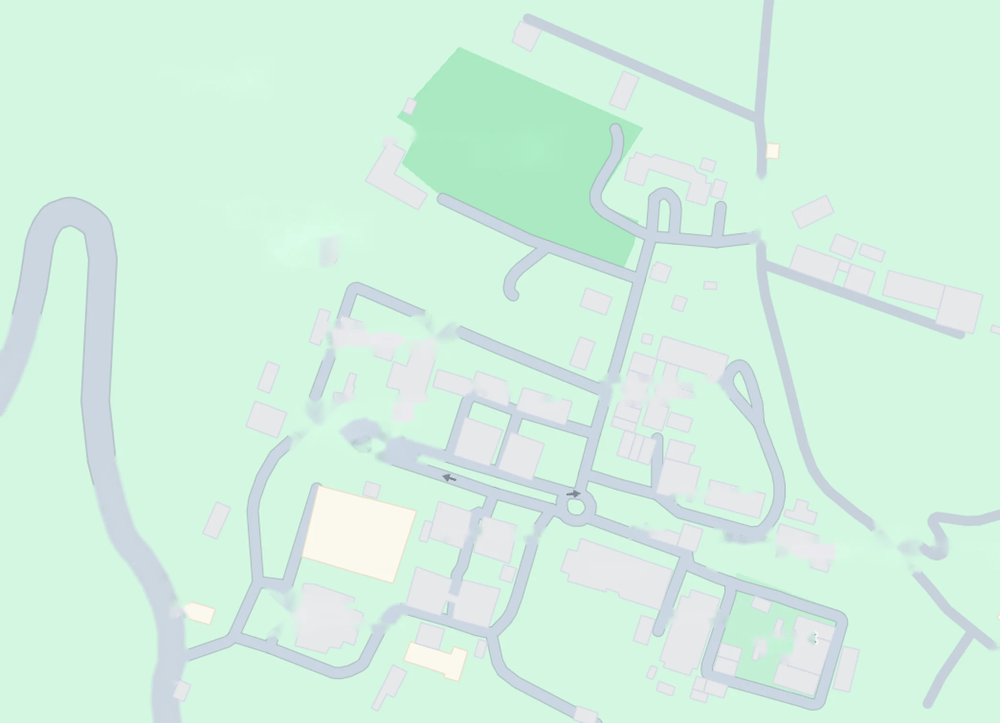

Main flow
Find a route
Choose where you are and where you are going. Search with autocomplete, use the lists, or tap places on the map.
- 1Where are you?
- 2Where to?
- 3Walk
100%

Simplified map, not to scale. Drag or use mouse wheel to pan and zoom. Walking times assume about 80 metres per minute.
Choose a start and a destination to see your route.
Quick find from start
Find nearest place by category: